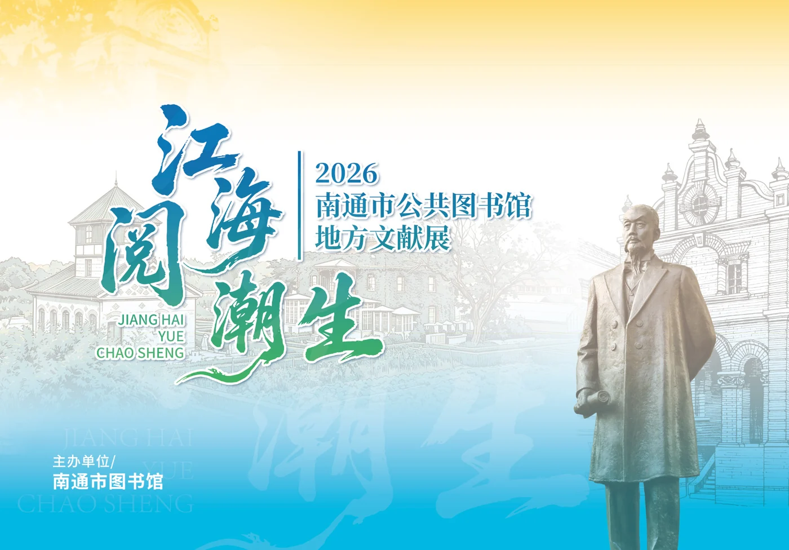

我的诗路护照
读取本机记录…
印章为个人自记，只保存于当前浏览器。
打开护照和江海旅人画像 ↗2026 南通市公共图书馆地方文献展
在书里读见张謇，在地图上找到江海。
从一处足迹出发，翻一页地方文献。
主办单位 · 南通市图书馆

01 / 展览序厅
让一本地方文献，成为认识一座城的起点。
展板可以告诉我们张謇到过哪里，地图则能把下一步交给读者：点开地点，查书名和页码；想去现场，就用地名发给同行的人，或打开导航。在展厅内沿书索地，走出展厅也能沿地找书。
02 / 从地点找文献
先选地区，再点地图或列表里的地点，查看对应书名和页码。游览前也可切到「非遗」「味道」或「怎么去」。
03 / 循年寻迹
生于海门，到江海各处办实业、兴教育。
04 / 近代开创
地域、门类和时间不同，称谓也不同。
已找到的限定语和待核说法分开列。
05 / 把地图读成书
按书名、地名或 ISBN 找书。
页码随地点列出，便于回到文献。
已接专题的书可直接打开；其余可复制书名，前往超星读秀检索，可能需要馆校登录。
06 / 把书里的地方走一遍
先看抵达方式，再打开地图确认最后一段。
出发前请查 12306 ↗。
07 / 带一页记忆回家
盖一枚个人印章，答一道展览题，再读一首诗。
展览延伸阅读
选一首打开诗路原文和朗读，诗中地点也可在原诗歌地图里查看。